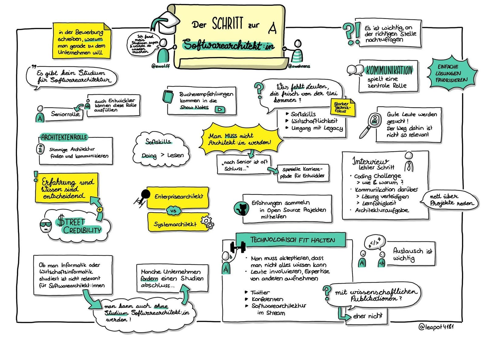

What does it take to become a software architect?
I got together with Eberhard Wolff to discuss and answer questions about what it takes to become a Software Architekt on Software Architektur TV. He was asked by several people what kind of skills a software architect needs, how a recruitment process might look or what kind of advice he could give to students to become an architect. So we got together and talked about it with live questions from the audience. The interview got recorded on YouTube, Twitch, and Podcast (in German).
Teapot4181 did (as always with Software Architektur TV) some very nice sketchnotes.

These are my notes for the interview, I thought I share it.
What is a software architect?
According to Wikipedia:
The role of software architect generally has certain common traits:
- Software architects make high-level design choices based on their programming experience. In addition, the software architect may sometimes propose technical standards, including coding standards, tools, or platforms.
- Software architects may also be engaged in the design of the architecture of the hardware environment, or may focus entirely on the design methodology of the code.
- Architects can use various architectural-oriented software packages that specialize in communicating architecture.
- Shape strategy
- explore technologies
- make important decisions
- Mentor developers
Where do you work?
Being a software architect can be very different depending on the working environment. The experience between a startup and a 400.000 employee company is something distinct.
You might not always have the title architect. This role can have many titles, developer, Architect, Lead Developer, CTO, or Chief Software Engineer (I made that up and I had this title). Bigger companies tend to have more of these titles. Smaller maybe not. But there is always architecture. The person(s) who feels responsible will fill the role. You might want to have the title for money or career reasons and this is perfectly fine. For a future career in different environments, this is helpful. In the end, it is the experience that counts.
What kind of experience do you need?
Usually, nobody starts as an architect. You usually need to have some years of experience in all aspects of software development. It includes
Software Development Deployment, incl. CI/CD Security Testing Scaling Simplicity Business Feasibility Operating System But that’s not all. As an architect, you are a major voice in your developer peer group. You need to facilitate meetings, find compromises, and accept solutions that are not your ideas. Your soft skills need to be on par with your tech skills.
My view
An architect has the trust of the developers. This person serves the team as somebody who will connect the concrete implementation with the bigger picture of the company/goal. The architect must have the trust of the team. Without trust, the implementation will not be excellent. In my experience, if the team gets a solution which they need ‘just’ to implement, it usually does not end optimal. The architect needs to have the street credibility of the team(s). This can be earned by helping to implement the solution. So trust and soft skills play a big role here.
If you are in this kind of situation, be prepared that whatever comes out of a discussion might not be at all the solution you are thinking of. It can be that the team which is doing the implementation work has some surprises for you on how things are working. For me, a good architect trusts the team and accepts their solution. Trust works both ways. There is no shame in admitting that your solution was not the best one. The best usually comes out of a discussion.
Interview
I interviewed lead developers and architects for some years in different areas. The most important points are for me:
What’s the attitude towards learning new things? Willing to dive into a new area to understand the potential. How pragmatic & flexible is the person? The person has a broad (even not too deep) overview of the product and technology available What kind of experience does the person have? I’m convinced that mindset is the most important thing. Technology can be learned if the person is willing to. Soft skills are much harder to learn and usually not that much taught at universities.
Usually, I do a 2 part technical interview.
Some real or imaginary coding job where we work together to find a solution. This is depending on what kind of architect we are looking for (more or less hands on coding) Some type of architecture discussion of a problem, like we need to build a blogging system In all of the above parts, there will be no wrong or right. This is very important. I understand that this is an interview situation and things might be usually better. The younger the applicant is, the more nervous people can be. I did the same tasks with lots of people and always got to a different solution. The important knowledge gained for me is to understand how the person thinks, can he connect the dots, explain the decisions taken and what’s important to that person. Also: the person learns how we think and can judge if this is a fit.
I look for simple, not complex solutions.
Other things …
On the questions of what to study to become an architect: For me, it does not matter so much. I studied applied computer science. I know people who studied media computer science which I do trust deeply. Even a non-computer science degree is ok. Attitude, maybe side projects, and experience count for me. So do what you love. Passion is good guidance.
I read a lot about new technology on Twitter, visiting conferences, and some web pages such as https://infoq.com. I do not know everything. I know broadly what’s available, know people I can ask or I’m willing to dig deeper into a topic once it is required. One person can not know everything. There is just too much.
One aspect which gets overlooked by aspiring architects is feasibility and context. Take into account what you need to get to a good solution. This means, 80% might be ok, not perfect but good enough. In early-stage developments of a product, you will not have all information to make long-lasting decisions. You might have to optimize for flexibility, knowing you need to rewrite big chunks in three months. I once ran a data-driven project without a database because we did not know what we needed. Turns out pretty graphs were more important for the customer and pre-computed JSON data was good enough for quite some time. Do not invent complex solutions if you don’t know that you need them. Who would have thought?
Your main tasks as an software architect will be (according to Stefan Tilkov)
- selling your ideas
- defending the architecture
- try to be involved (35%)
- tech stuff (5%)
- I can not agree more.
I hope you got some ideas about what you will experience in the process of becoming and working as a software architect.
Thank you for reading the preparation notes for the interview ;-).